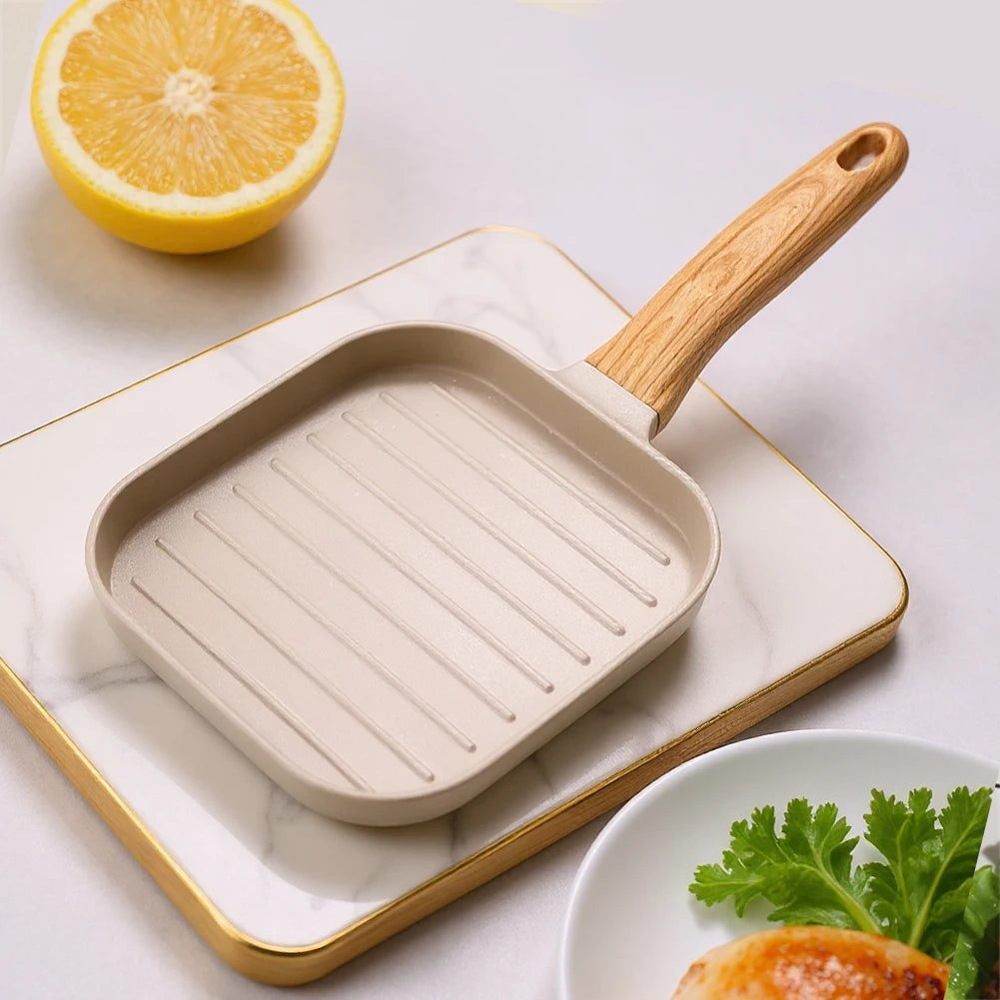
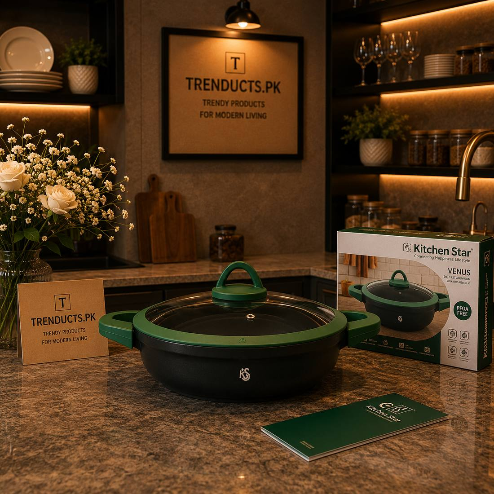
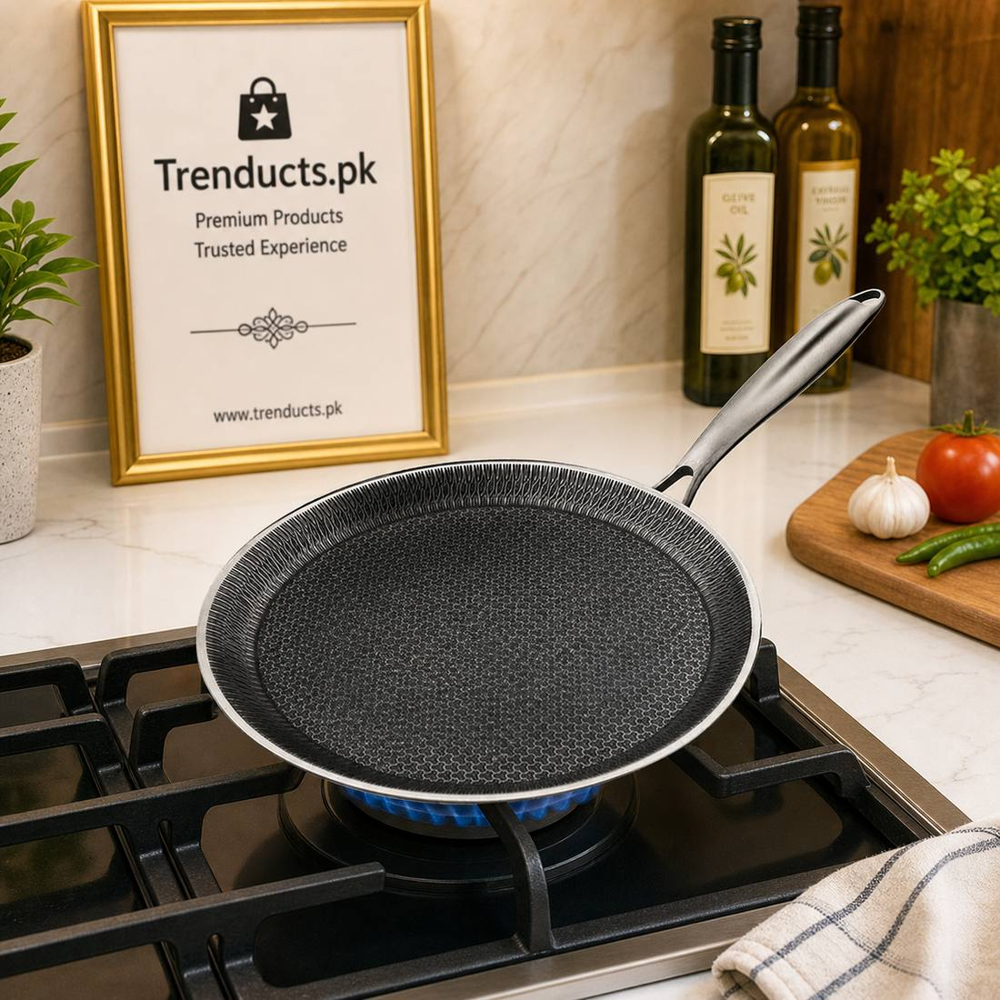

Practical habits for using, cleaning and storing non-stick and granite pans in a Pakistani kitchen, from heat control to the right spatula.

Non-stick pans have become a normal part of Pakistani kitchens. They make omelettes and parathas easier, cut down on oil for shami kababs, and save a lot of scrubbing compared with an old steel karahi. Yet many families find their pans losing their slickness within a year and assume the pan was poor quality. Very often the pan was fine. The habits around it were the problem.
The good news is that a few simple changes make a large difference. None of them need special products, and most of them cost nothing at all.
Desi cooking loves high flame. Bhunai, tarka and a smoky finish all push us to turn the burner right up. Non-stick coatings, though, do not enjoy being heated empty on a high flame. The coating can break down and lose its release properties over time.
Get in the habit of adding oil or food before the pan gets very hot, and cook on medium for most tasks. For a proper tarka, make it in a small steel or iron pan and pour it over. Keep your non-stick for eggs, pancakes, parathas, cutlets and gentle sautéing, where it really shines.
Metal spoons and steel spatulas are the fastest way to scratch a coating. Silicone, wooden and nylon spatulas are kinder and are easy to find. If several people cook in your house, keep the metal tools well away from the non-stick pan so nobody grabs them out of habit. Never cut food inside the pan with a knife.
Let the pan cool before washing. Plunging a hot pan into cold water can warp the base over time, and a warped base sits unevenly on the burner, creating hot spots. Wash with a soft sponge and normal dish soap. For stuck-on bits, soak in warm soapy water for ten minutes instead of scrubbing with steel wool.

If oil residue has built up into a sticky layer, a paste of baking soda and water applied gently with a sponge usually lifts it. Avoid harsh scouring powders.
Most kitchens stack pans inside each other, and the bottom of one pan rubs against the coating of the next. Place a folded kitchen towel or a paper plate between pans when stacking, or hang them on hooks if you have wall space. This one habit keeps coatings looking new far longer.
Not every modern pan is the classic black Teflon type. Granite-style coated woks and pots are heavier and often handle everyday desi cooking well, though they still prefer medium heat and soft tools. Stainless steel pans with a raised honeycomb pattern combine steel with a non-stick layer in the recesses, so they tolerate a bit more rough handling, but they still benefit from gentle cleaning.
Read the care instructions that come with the pan. Some are labelled safe for higher heat or for the oven, and some are not. Following the maker's guidance is more reliable than any general rule.

At that point, retire the pan rather than keep cooking with it. Coatings in poor condition do not cook evenly and are not pleasant to use.
Most households do not need a large matching set. A medium frying pan, a deeper wok or karahi-style pan, and a grill pan for chicken and paneer cover nearly everything. If you are shopping for replacements, browse non-stick cookware and utensils on Trenducts.pk, which delivers across Pakistan.
Follow those four points and your next pan should stay slick for a long time.